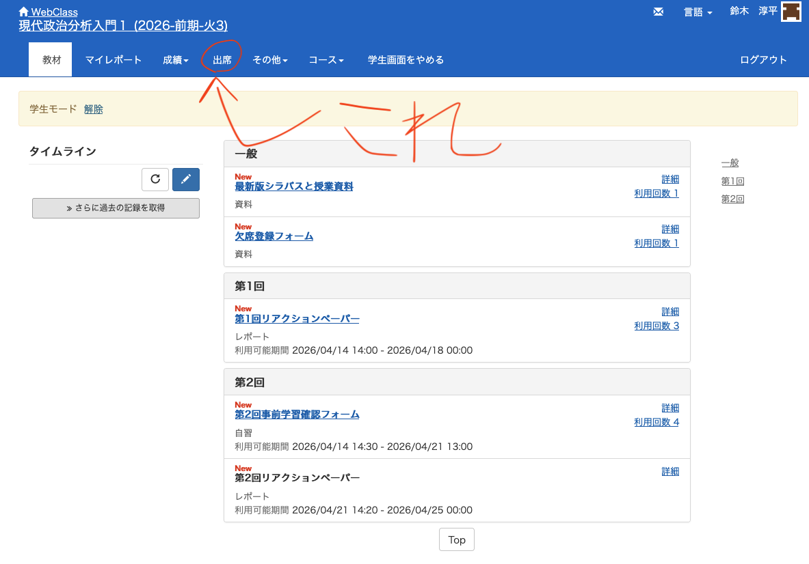

04/説明と一般化
現代政治分析入門1
2026-05-12
出席登録をお願いします

今日の目次
- はじめに
- 個別的／一般的説明
- 一般志向と個別志向
- 概念化と操作化
- まとめ
はじめに
アンケート
ゴールデンウィークを楽しみましたか？
- はい
- いいえ
教科書の指定部分を読んできましたか？
- はい
- いいえ
先週のRPより
反証可能性が「間違っていると示せる可能性を持っているか」という意味意をもっていることを知った。これまでは証明できることが大切だと思っていたが、むしろ間違いを検証できることが重要だと知り、印象に残った。
反証できなければ科学的な因果推論と認められないというのは、最初は疑問だったが、その理論と違うことが起きても無敵の言い訳が使えないようにするためなのだと考えると腑に落ちた。
自分の仮説がどうすれば反証されたといえるのかはっきり理解することができなかったので次回反証についてもう少し触れてほしい。
先週のRPより（続）
反証可能性とはすべての猫がニャーと鳴くという仮説があった場合、ワンワンと鳴く猫が見つかった場合反証可能と言えるという認識であっていますか？
仮説を、「SNSを用いた政治が活性化するほど、若者の投票率は上がる」としたが、反証として「SNSを用いた政治が活性化しても、若者の投票率が上がっていない」を挙げることが可能だとわかった。
仮設‥長女は末っ子より責任感が強い→反証条件‥調査では生まれ順と責任感には差がない
先週のRPより（続）
文化論が想像していた政治分析よりも随分と曖昧な定義に思えて、興味深かったです。ですが文化という概念は大きすぎて、いくらでも反証できてしまうのではないかと思いました。
本日の目的と到達目標
目的
因果推論について個別的説明と一般的説明の区別を捉えた上で、個別的説明を一般化することの意義と課題を説明できるようになることを目指す。また、抽象的な概念を測定する方法についても理解する。
到達目標
- 自ら組み立てた個別的説明を抽象化して一般化することができる。
- 説明を一般化することがなぜ望ましいのか説明できる。
- 説明の一般志向と個別志向の立場の違いを説明できる。
- 抽象的な概念を操作化することができる。
本日の授業の位置付け

個別的／一般的説明
説明：個別と一般
個別的説明
特定の事象に潜む因果関係を説明すること
例：「Aさんが出世したのはなぜだろう？」
→「Aさんは身長180cmある。これが成功のカギに違いない」
一般的説明
一般的に当てはまる因果関係を説明すること
例：「Aさんが出世したのは身長が180cmあるから」
→「身長が高いほど出世する確率は高くなる」
- 固有名詞が消え、多くのケースを対象としている
ソロ＋ペアワーク
目的：個別的説明を組み立て、抽象化して一般的説明に組み替えることができる
- ソロワーク（3-4分）…ワークシート上でまずは自分で政治や社会、日常生活に関する個別的な説明（仮説）を組み立てる
- ペアワーク（3-4分）…WSを交換し、相手の個別的説明を一般化してみる
- シェア（3-4分）…全体にシェア（WebClassチャット）
一般志向と個別志向
アンケート（10-15分）
- 政治学は自然科学のように一般的説明を目指すべきでしょうか（＝一般志向）。それとも個別の現象を詳しく記述することを目指すべきでしょうか（＝個別志向）。
- あなたが選ばなかった立場の「強み」を100字以内で記述してください。
- 最終的にあなたがこの立場を選ぶ理由を100字以内で記述してください。
WebClassアンケートで回答してください（チャットとは別）。
一般と個別の往復
政治学の研究は一般的説明の追求と個別事例の検討の往復から蓄積されてきた
例：政党システムの例
- 英米の二大政党制と大陸欧州の多党制→選挙制度の違い（個別）
- デュベルジェの法則「選挙制度が政党システムを決める」（一般）
- カナダやインドの事例→小選挙区制なのに多党制→言語・文化対立（個別）
- 凍結仮説「社会的亀裂が政党システムを決める」（一般）
概念化と操作化
概念化と操作化
概念化 (conceputalization)
抽象的な概念を成り立たせている構成要素を検討し定式化すること
- 学力＝学習で得た知識や情報量
操作化 (operationalization)
抽象的な概念を観察可能な変数を用いて定義し直すこと
- 測定 (measurement)とも
- 学力＝テストの点数
パットナムの研究
市民度と政府パフォーマンスの関係の分析1
- イタリア…市民度が高くパフォーマンスが良い北部諸州とそうでない南部
市民度…人々がどの程度市民的共同体に関わっているか（概念化）
- スポーツ・文化団体数、新聞購読率…（操作化）
パフォーマンス…政府がどの程度問題を管理し、解決策を提示し、執行しているか（概念化）
- 内閣の数、改革法案の数、官僚の応答スピード…（操作化）
Q. 市民度の操作化に問題はないだろうか？（WebClassチャット）

まとめ
本日の目的と到達目標
目的
因果推論について個別的説明と一般的説明の区別を捉えた上で、個別的説明を一般化することの意義と課題を説明できるようになることを目指す。また、抽象的な概念を測定する方法についても理解する。
到達目標
- 自ら組み立てた個別的説明を抽象化して一般化することができる。
- 説明を一般化することがなぜ望ましいのか説明できる。
- 説明の一般志向と個別志向の立場の違いを説明できる。
- 抽象的な概念を操作化することができる。
次回までに
事後学習
- 授業資料を見直し、目標到達をセルフチェック
- WebClass 上でのリアクションペーパー入力（金曜日まで）
事前学習
- 教科書（久米4章）を読み、WebClass 上でのチェックフォーム記入

説明と一般化